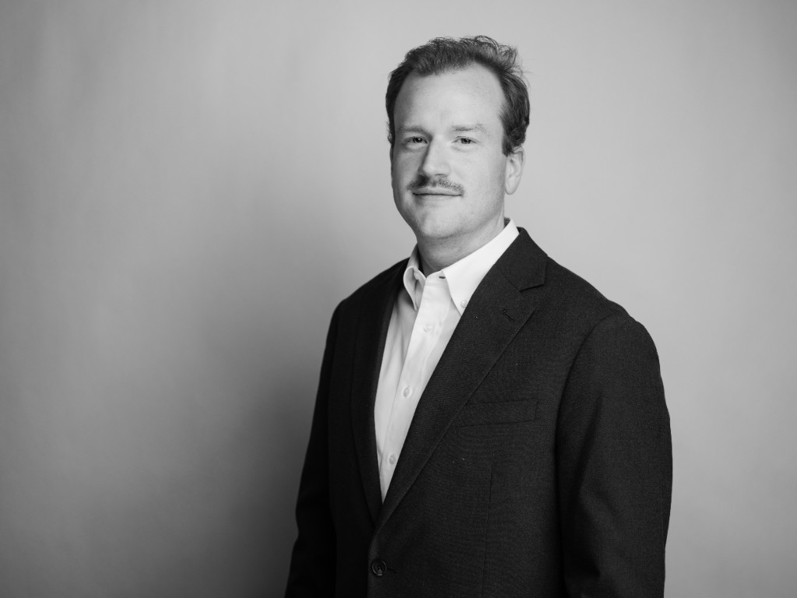

Video Creative
Story-driven video for brands, communications, and impact.
I make videos that help brands and organizations accurately communicate to their audience. I’ve produced, directed, shot, and edited work across commercial, documentary, and brand projects—keeping the story clear and the process moving from first conversation through final delivery.
I’m looking for producer and video production roles where storytelling and logistics sit close together. Based in Memphis and open to the right opportunity.

I start with the idea and stay with it until it’s finished. I build plans, keep timelines and teams aligned, and stay hands-on when it helps—on camera or in the edit—until the piece feels honest to what we set out to say.
All work shown was produced by the amazing team at Creation Studios. I contributed in multiple roles to make the highest quality videos and content for our clients.
Eight projects that best represent my range as a director, editor, and cinematographer.
Full collection. Filter by category or role.
Category
Role
Creation Studios · Memphis, TN · Nov 2025 – Present
Partner with creative teams to turn concepts and storyboards into actionable production plans. Manage timelines across shoots and delivery, coordinate filming and equipment, and bridge on-set realities with post-production for smooth handoffs.
Shoot the Veil · Memphis, TN · Aug 2022 – May 2025
Produced and delivered long-form courses and podcast video for photographers building their businesses. Shot and edited program content while helping establish production foundations for a startup.
Creation Studios · Memphis, TN · May 2018 – Nov 2025
Operated camera, audio, and lighting setups; managed multiple concurrent projects and organized media assets for efficient editorial handoff. Built foundational production skills across client work for brands, nonprofits, and education.
Open to video production, content, and communications roles. Let’s connect.